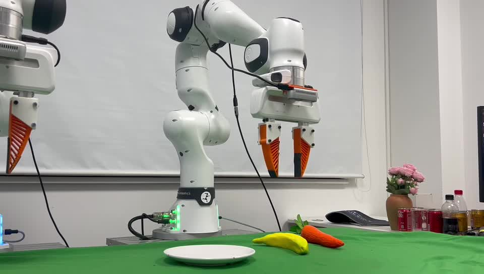
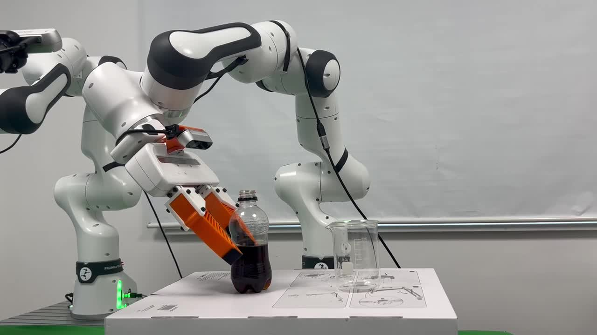

Multi-level visual injection
Couple the last 16 DINOv3 layers with the deepest 16 VLA layers through shared attention.
Bring task-relevant visual detail into deeper action layers, so robots stay grounded in what they see.
A vision expert refreshes the evidence that action prediction needs.
A VLA can understand an instruction yet miss the object when it acts. Our analysis asks where task-relevant visual information becomes underused inside the model.
DeepVision-VLA reconnects deep action layers with a high-resolution vision expert. Shallow action attention selects useful visual regions before this deeper fusion.
Looking inside OpenVLA, π₀ and QwenVLA-OFT.
Masking task-region tokens in shallow layers causes a larger increase in action error.
Visual contribution becomes less task-focused, while masking has a smaller effect.
The design response: reinforce useful visual evidence where action prediction becomes less sensitive to it.
VL-MoT + Action-Guided Visual Pruning
Couple the last 16 DINOv3 layers with the deepest 16 VLA layers through shared attention.
Aggregate shallow action-to-vision attention and retain the most relevant 50% of expert tokens.
Preserve the expert and VLA pathways, then map action-token representations to continuous actions in parallel.
Stronger visual grounding supports precise and multi-stage manipulation.
Ten manipulation tasks, including closing containers, sweeping, tool handling and watering plants.
Close box · Close laptop lid · Toilet seat down · Sweep to dustpan · Close fridge · Phone on base · Umbrella out · Frame off hanger · Wine at rack · Water plants
Fruit pick-and-place, can stacking, writing, pouring, and bimanual flower transfer.


Visual detail matters for both contact precision and the later steps of a task.
Success rates reported in the paper, Tables 1–2. Real-world mean averages the eight reported atomic task/step entries.
Deep visual fusion and late DINOv3 features work best in the controlled study. Action-conditioned pruning preserves useful regions, while averaging shallow attention layers gives a stronger cue than a single layer.
Controlled ablations use a separate protocol from the main results; see the paper for the full comparison.
Manipulation under clutter and visual distraction.
“Pick up and place the banana and carrot into the plate.”
“Pour cola.”
DeepVision-VLA in three scene conditions. Demonstration videos are shown at 3× speed.
Read the paper, explore the released inference and evaluation code, or try the RLBench-10 checkpoint.
@misc{luo2026lookactingenhancingvision,
title={Look Before Acting: Enhancing Vision Foundation Representations for Vision-Language-Action Models},
author={Yulin Luo and Hao Chen and Zhuangzhe Wu and Bowen Sui and Jiaming Liu and Chenyang Gu and Zhuoyang Liu and Qiuxuan Feng and Jiale Yu and Shuo Gu and Peng Jia and Pheng-Ann Heng and Shanghang Zhang},
year={2026},
eprint={2603.15618},
archivePrefix={arXiv},
primaryClass={cs.CV},
url={https://arxiv.org/abs/2603.15618}
}